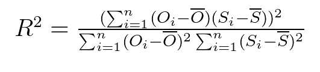

r_squared¶
-
HydroErr.HydroErr.r_squared(simulated_array, observed_array, replace_nan=None, replace_inf=None, remove_neg=False, remove_zero=False)¶ Compute the the Coefficient of Determination (r2).
Range: 0 ≤ r2 ≤ 1. 1 indicates perfect correlation, 0 indicates complete randomness.
Notes: The Coefficient of Determination measures the linear relation between simulated and observed data. Because it is the pearson correlation coefficient squared, it is more heavily affected by outliers than the pearson correlation coefficient.
Parameters: - simulated_array (one dimensional ndarray) – An array of simulated data from the time series.
- observed_array (one dimensional ndarray) – An array of observed data from the time series.
- replace_nan (float, optional) – If given, indicates which value to replace NaN values with in the two arrays. If None, when a NaN value is found at the i-th position in the observed OR simulated array, the i-th value of the observed and simulated array are removed before the computation.
- replace_inf (float, optional) – If given, indicates which value to replace Inf values with in the two arrays. If None, when an inf value is found at the i-th position in the observed OR simulated array, the i-th value of the observed and simulated array are removed before the computation.
- remove_neg (boolean, optional) – If True, when a negative value is found at the i-th position in the observed OR simulated array, the i-th value of the observed AND simulated array are removed before the computation.
- remove_zero (boolean, optional) – If true, when a zero value is found at the i-th position in the observed OR simulated array, the i-th value of the observed AND simulated array are removed before the computation.
Returns: - float – The coefficient of determination (R^2).
- >>> import HydroErr as he
- >>> import numpy as np
- >>> sim = np.array([5, 7, 9, 2, 4.5, 6.7])
- >>> obs = np.array([4.7, 6, 10, 2.5, 4, 7])
- >>> he.r_squared(sim, obs)
- 0.9236735425294681
References